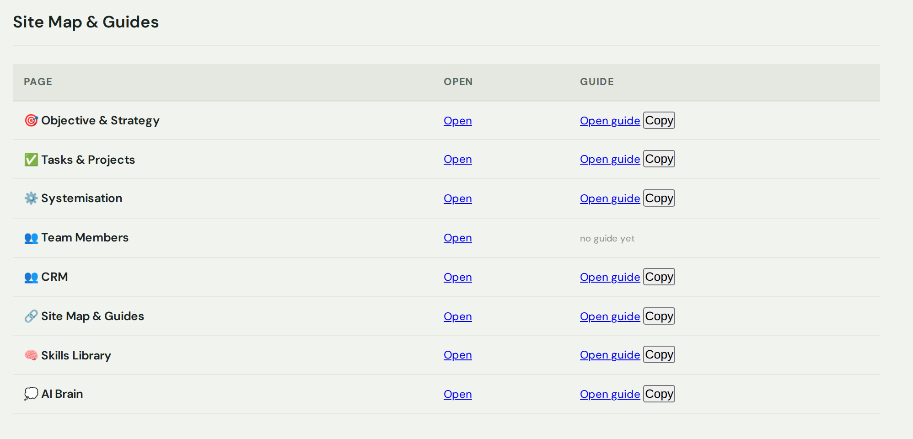

Your map of the whole platform. Every page you have, in one list — with a plain-English guide for each.
What this page is for
It's a single list of every page in your workspace. From here you can jump straight to any page, and open a short how-to guide for it — just like the one you're reading now.
What you can do here
See all your pages in one place.
Open any page with one click.
Open its guide — a plain-English how-to.
Copy a guide's link to share with your team.
How to use it
Find the page you want in the list.

Every page, with a link to open it and a link to its guide.
Click Open to go straight to that page.
Click Open guide to read how to use it. Copy grabs the guide's link so you can share it with your team.
Tip: New here? This is the best place to start — open each page's guide to learn your way around the platform.